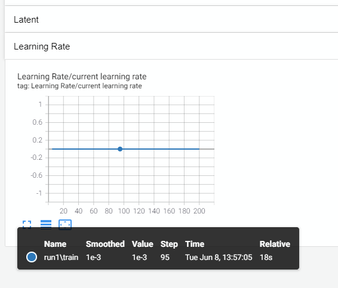
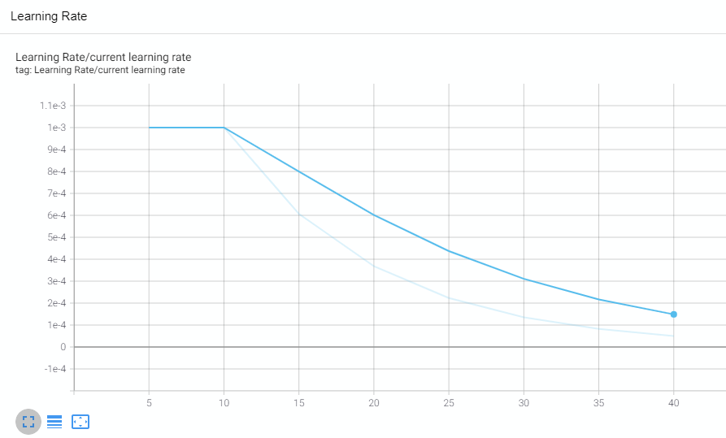

Learning Rate Scheduler#
Run this notebook on Google Colab:

Find the documentation of EncoderMap:
https://ag-peter.github.io/encodermap
For Google colab only:#
If you’re on Google colab, please uncomment these lines and install EncoderMap.
[1]:
# !wget https://raw.githubusercontent.com/AG-Peter/encodermap/main/tutorials/install_encodermap_google_colab.sh
# !sudo bash install_encodermap_google_colab.sh
If you’re on Google Colab, you also want to download the data we will use:
[2]:
# !wget https://raw.githubusercontent.com/AG-Peter/encodermap/main/tutorials/notebooks_starter/asp7.csv
Primer#
In this tutorial you will learn how to use the LearningRateScheduler to dynamically alter the learning rate of your encodermap trainings. As usual we will begin by importing some modules.
[3]:
import numpy as np
import encodermap as em
import tensorflow as tf
import pandas as pd
2023-02-02 13:00:39.499289: I tensorflow/core/platform/cpu_feature_guard.cc:193] This TensorFlow binary is optimized with oneAPI Deep Neural Network Library (oneDNN) to use the following CPU instructions in performance-critical operations: AVX2 AVX512F FMA
To enable them in other operations, rebuild TensorFlow with the appropriate compiler flags.
2023-02-02 13:00:39.629291: W tensorflow/compiler/xla/stream_executor/platform/default/dso_loader.cc:64] Could not load dynamic library 'libcudart.so.11.0'; dlerror: libcudart.so.11.0: cannot open shared object file: No such file or directory; LD_LIBRARY_PATH: /opt/hostedtoolcache/Python/3.9.16/x64/lib
2023-02-02 13:00:39.629313: I tensorflow/compiler/xla/stream_executor/cuda/cudart_stub.cc:29] Ignore above cudart dlerror if you do not have a GPU set up on your machine.
2023-02-02 13:00:40.281864: W tensorflow/compiler/xla/stream_executor/platform/default/dso_loader.cc:64] Could not load dynamic library 'libnvinfer.so.7'; dlerror: libnvinfer.so.7: cannot open shared object file: No such file or directory; LD_LIBRARY_PATH: /opt/hostedtoolcache/Python/3.9.16/x64/lib
2023-02-02 13:00:40.281946: W tensorflow/compiler/xla/stream_executor/platform/default/dso_loader.cc:64] Could not load dynamic library 'libnvinfer_plugin.so.7'; dlerror: libnvinfer_plugin.so.7: cannot open shared object file: No such file or directory; LD_LIBRARY_PATH: /opt/hostedtoolcache/Python/3.9.16/x64/lib
2023-02-02 13:00:40.281954: W tensorflow/compiler/tf2tensorrt/utils/py_utils.cc:38] TF-TRT Warning: Cannot dlopen some TensorRT libraries. If you would like to use Nvidia GPU with TensorRT, please make sure the missing libraries mentioned above are installed properly.
We wil work in the directory runs/lr_scheduler. So we will create it and then worry about tensorflow later.
[4]:
import os
os.makedirs('runs/lr_scheduler', exist_ok=True)
Log the current learning rate to Tensorboard#
Before we implement some dynamic learning rates we want to find a way to log the learning rate to tensorboard. We will log the training to runs/lr_scheduler so navigate to this directory with
$ cd runs/lr_scheduler
and start tensorboard.
$ tensorboard --logdir . --reload_multifile True
You should now be able to open TensorBoard in your webbrowser on port 6006. 0.0.0.0:6006 or 127.0.0.1:6006
If you’re on Google colab, you can start tensorboard by uncommenting the next cell:
[5]:
# %load_ext tensorboard
# %tensorboard --logdir .
To write our current learning rate to tensorboard we will use EncoderMap’s EncoderMapBaseCallback and create a subclass of it.
We don’t even need to define an __init__() method, as we can just use the parent’s class __init__() method. We only need to overwrite either the on_summary_step(self, batch, logs={}) or the on_checkpoint_step(self, batch, logs={}) class methods. This depends, whether you want to execute the method every summary_step steps or every checkpoint_steps. The difference between the two can be taken from EncoderMap’s Parameter classes.
[6]:
print(em.Parameters.defaults_description())
Parameter | Default Value | Description
---------------------+--------------------------+---------------------------------------------------
n_neurons | [128, 128, 2] | List containing number of neurons for each layer
| | up to the bottleneck layer. For example [128, 128,
| | 2] stands for an autoencoder with the following
| | architecture {i, 128, 128, 2, 128, 128, i} where i
| | is the number of dimensions of the input data.
| | These are Input/Output Layers that are not
| | trained.
---------------------+--------------------------+---------------------------------------------------
activation_functions | ['', 'tanh', 'tanh', ''] | List of activation function names as implemented
| | in TensorFlow. For example: "relu", "tanh",
| | "sigmoid" or "" to use no activation function. The
| | encoder part of the network takes the activation
| | functions from the list starting with the second
| | element. The decoder part of the network takes the
| | activation functions in reversed order starting
| | with the second element form the back. For example
| | ["", "relu", "tanh", ""] would result in a
| | autoencoder with {"relu", "tanh", "", "tanh",
| | "relu", ""} as sequence of activation functions.
---------------------+--------------------------+---------------------------------------------------
periodicity | 6.283185307179586 | Defines the distance between periodic walls for
| | the inputs. For example 2pi for angular values in
| | radians. All periodic data processed by EncoderMap
| | must be wrapped to one periodic window. E.g. data
| | with 2pi periodicity may contain values from -pi
| | to pi or from 0 to 2pi. Set the periodicity to
| | float("inf") for non-periodic inputs.
---------------------+--------------------------+---------------------------------------------------
learning_rate | 0.001 | Learning rate used by the optimizer.
---------------------+--------------------------+---------------------------------------------------
n_steps | 100000 | Number of training steps.
---------------------+--------------------------+---------------------------------------------------
batch_size | 256 | Number of training points used in each training
| | step
---------------------+--------------------------+---------------------------------------------------
summary_step | 10 | A summary for TensorBoard is writen every
| | summary_step steps.
---------------------+--------------------------+---------------------------------------------------
checkpoint_step | 5000 | A checkpoint is writen every checkpoint_step
| | steps.
---------------------+--------------------------+---------------------------------------------------
dist_sig_parameters | (4.5, 12, 6, 1, 2, 6) | Parameters for the sigmoid functions applied to
| | the high- and low-dimensional distances in the
| | following order (sig_h, a_h, b_h, sig_l, a_l, b_l)
---------------------+--------------------------+---------------------------------------------------
distance_cost_scale | 500 | Adjusts how much the distance based metric is
| | weighted in the cost function.
---------------------+--------------------------+---------------------------------------------------
auto_cost_scale | 1 | Adjusts how much the autoencoding cost is weighted
| | in the cost function.
---------------------+--------------------------+---------------------------------------------------
auto_cost_variant | mean_abs | defines how the auto cost is calculated. Must be
| | one of: * `mean_square` * `mean_abs` * `mean_norm`
---------------------+--------------------------+---------------------------------------------------
center_cost_scale | 0.0001 | Adjusts how much the centering cost is weighted in
| | the cost function.
---------------------+--------------------------+---------------------------------------------------
l2_reg_constant | 0.001 | Adjusts how much the L2 regularisation is weighted
| | in the cost function.
---------------------+--------------------------+---------------------------------------------------
gpu_memory_fraction | | Specifies the fraction of gpu memory blocked. If
| | set to 0, memory is allocated as needed.
---------------------+--------------------------+---------------------------------------------------
analysis_path | | A path that can be used to store analysis
---------------------+--------------------------+---------------------------------------------------
id | | Can be any name for the run. Might be useful for
| | example for specific analysis for different data
| | sets.
---------------------+--------------------------+---------------------------------------------------
model_api | sequential | A string defining the API to be used to build the
| | keras model. Defaults to `sequntial`. Possible
| | strings are: * `functional` will use keras'
| | functional API. * `sequential` will define a keras
| | Model, containing two other models with the
| | Sequential API. These two models are encoder and
| | decoder. * `custom` will create a custom Model
| | where even the layers are custom.
---------------------+--------------------------+---------------------------------------------------
loss | emap_cost | A string defining the loss function. Defaults to
| | `emap_cost`. Possible losses are: *
| | `reconstruction_loss` will try to train output ==
| | input * `mse`: Returns a mean squared error loss.
| | * `emap_cost` is the EncoderMap loss function.
| | Depending on the class `Autoencoder`, `Encodermap,
| | `ACDAutoencoder`, different contributions are used
| | for a combined loss. Autoencoder uses atuo_cost,
| | reg_cost, center_cost. EncoderMap class adds
| | sigmoid_loss.
---------------------+--------------------------+---------------------------------------------------
training | auto | A string defining what kind of training is
| | performed when autoencoder.train() is callsed. *
| | `auto` does a regular model.compile() and
| | model.fit() procedure. * `custom` uses gradient
| | tape and calculates losses and gradients manually.
---------------------+--------------------------+---------------------------------------------------
batched | True | Whether the dataset is batched or not.
---------------------+--------------------------+---------------------------------------------------
tensorboard | | Whether to print tensorboard information. Defaults
| | to False.
---------------------+--------------------------+---------------------------------------------------
seed | | Fixes the state of all operations using random
Here’s the Logger:
[7]:
class LearningRateLogger(em.EncoderMapBaseCallback):
def on_summary_step(self, step, logs=None):
with tf.name_scope("Learning Rate"):
tf.summary.scalar('current learning rate', self.model.optimizer.lr, step=step)
We can now create an EncoderMap class and add our new callback. Note, how we instantiate our subclass by providing an instance of the Parameters class. That’s how the callback knows what summary_step is.
[8]:
df = pd.read_csv('asp7.csv')
dihedrals = df.iloc[:,:-1].values.astype(np.float32)
cluster_ids = df.iloc[:,-1].values
parameters = em.Parameters(
tensorboard=True,
periodicity=2*np.pi,
main_path=em.misc.run_path('runs/lr_scheduler'),
n_steps=100,
summary_step=5
)
# create an instance of EncoderMap
e_map = em.EncoderMap(parameters, dihedrals)
# Add an instance of the new Callback
e_map.callbacks.append(LearningRateLogger(parameters))
Output files are saved to runs/lr_scheduler/run0 as defined in 'main_path' in the parameters.
You must install pydot (`pip install pydot`) and install graphviz (see instructions at https://graphviz.gitlab.io/download/) for plot_model to work.
Saved a text-summary of the model and an image in runs/lr_scheduler/run0, as specified in 'main_path' in the parameters.
2023-02-02 13:00:42.589334: W tensorflow/compiler/xla/stream_executor/platform/default/dso_loader.cc:64] Could not load dynamic library 'libcuda.so.1'; dlerror: libcuda.so.1: cannot open shared object file: No such file or directory; LD_LIBRARY_PATH: /opt/hostedtoolcache/Python/3.9.16/x64/lib
2023-02-02 13:00:42.589360: W tensorflow/compiler/xla/stream_executor/cuda/cuda_driver.cc:265] failed call to cuInit: UNKNOWN ERROR (303)
2023-02-02 13:00:42.589378: I tensorflow/compiler/xla/stream_executor/cuda/cuda_diagnostics.cc:156] kernel driver does not appear to be running on this host (fv-az442-794): /proc/driver/nvidia/version does not exist
2023-02-02 13:00:42.589569: I tensorflow/core/platform/cpu_feature_guard.cc:193] This TensorFlow binary is optimized with oneAPI Deep Neural Network Library (oneDNN) to use the following CPU instructions in performance-critical operations: AVX2 AVX512F FMA
To enable them in other operations, rebuild TensorFlow with the appropriate compiler flags.
train
[9]:
e_map.train()
100%|██████████| 100/100 [00:07<00:00, 13.34it/s, Loss after step 100=38.2]
WARNING:absl:Function `_wrapped_model` contains input name(s) Encoder_0_input with unsupported characters which will be renamed to encoder_0_input in the SavedModel.
WARNING:absl:Function `_wrapped_model` contains input name(s) Decoder_0_input with unsupported characters which will be renamed to decoder_0_input in the SavedModel.
Here’s what Tensorboard should look like:

A constant learning rate of 0.001
Write a learning rate scheduler.#
We can write a learning rate scheduler either by providing intervals of training steps and the associated learning rate:
def lr_schedule(step):
"""
Returns a custom learning rate that decreases as steps progress.
"""
learning_rate = 0.2
if step > 10:
learning_rate = 0.02
if step > 20:
learning_rate = 0.01
if step > 50:
learning_rate = 0.005
Or by using a function that gives us a learning rate:
def scheduler(step, lr=1, n_steps=1000):
"""
Returns a custom learning rate that decreases based on an exp function as steps progress.
"""
if step < 10:
return lr
else:
return lr * tf.math.exp(-step / n_steps)
Below, is an example combining both:
[10]:
def scheduler(step, lr=1):
"""
Returns a custom learning rate that decreases based on an exp function as steps progress.
"""
if step < 10:
return lr
else:
return lr * tf.math.exp(-0.1)
This scheduler function can simply be provided to the builtin keras.callbacks.LearningRateScheduler callback.
[11]:
callback = tf.keras.callbacks.LearningRateScheduler(scheduler)
And appended to the list of callbacks in the EncoderMap class.
[12]:
parameters = em.Parameters(
tensorboard=True,
periodicity=2*np.pi,
main_path=em.misc.run_path('runs/lr_scheduler'),
n_steps=50,
summary_step=5
)
e_map = em.EncoderMap(parameters, dihedrals)
e_map.callbacks.append(LearningRateLogger(parameters))
e_map.callbacks.append(callback)
Output files are saved to runs/lr_scheduler/run1 as defined in 'main_path' in the parameters.
You must install pydot (`pip install pydot`) and install graphviz (see instructions at https://graphviz.gitlab.io/download/) for plot_model to work.
Saved a text-summary of the model and an image in runs/lr_scheduler/run1, as specified in 'main_path' in the parameters.
[13]:
e_map.train()
100%|██████████| 50/50 [00:06<00:00, 7.66it/s, Loss after step 50=43.3]
WARNING:absl:Function `_wrapped_model` contains input name(s) Encoder_0_input with unsupported characters which will be renamed to encoder_0_input in the SavedModel.
WARNING:absl:Function `_wrapped_model` contains input name(s) Decoder_0_input with unsupported characters which will be renamed to decoder_0_input in the SavedModel.
Here’s what Tensorboard should look like:

Conclusion#
Learning rate schedulers are helpful to prevent overtraining, but still slightly increase the predictive power of your NN model. EncoderMap’s modularity allows for them to be simple Plug-In solutions.